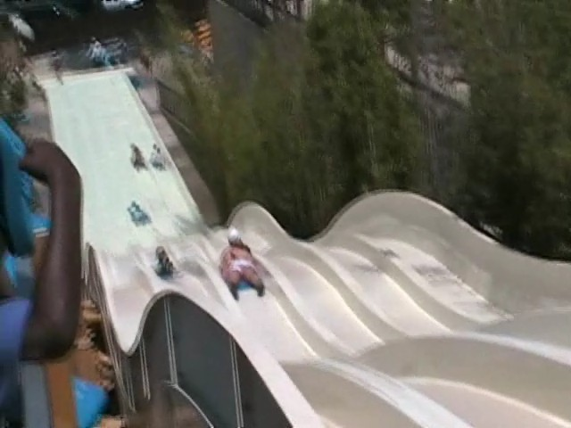
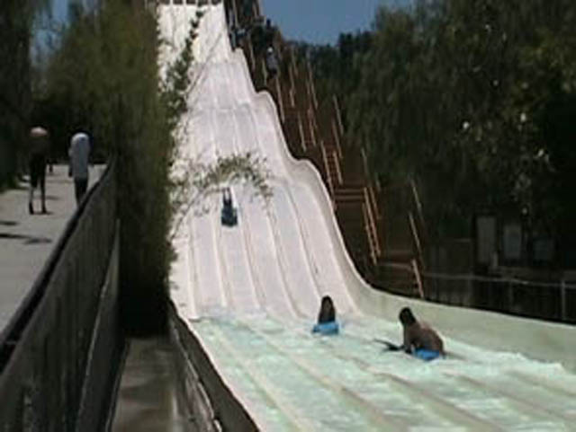
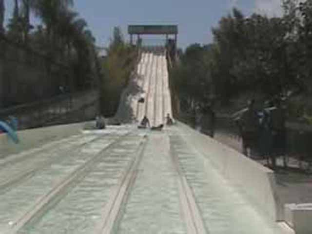

| |
Bamboo Racer Review

We're here at Six Flags Hurricane Harbor, where we'll be reveiwing Bamboo Racer. The parks racing waterslide. First you grab your mat, drag it up the stairs, give everyone else the evil eye and get ready. Then when the lifeguard lets you go, get yourself a REALLY good start. If you do, then you'll go down the bumps. Although your probably too concentrated on kicking your friends ass to notice, but those bumps are fun. Then you skid across the water into your place. And let me tell you, second is good.
6/10
Location: Six Flags Hurricane Harbor
Opened: 1997
Built by: White Water Slides
Last Ridden: June 14, 2017
I have ridden this exact same ride at the following waterparks.
Soak City
Splashin' Safari
Sun Splash
Bamboo Racer Photos



Home
|